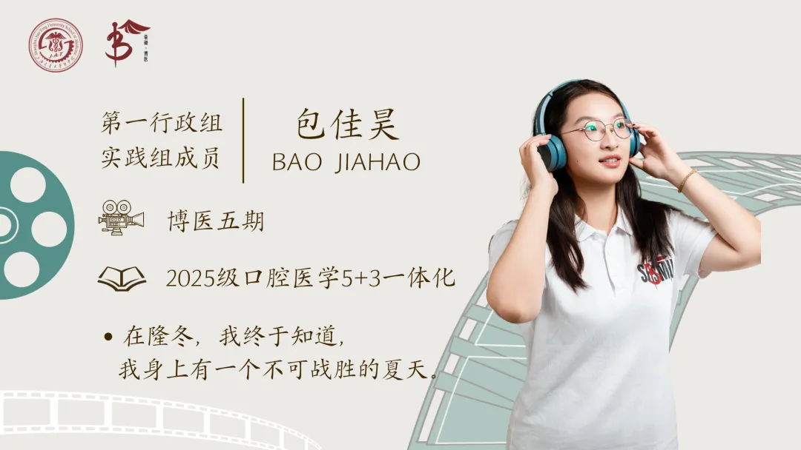
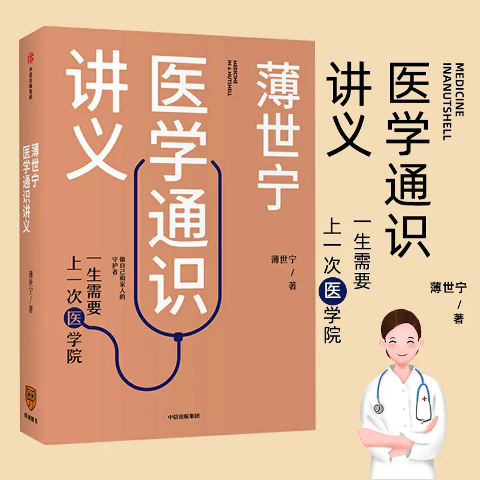

博医之声
“博医之声”是由上海交通大学医学院“荣昶-博医”卓越医学生培养计划推出的学员分享专栏，博医学子将结合自己在医学道路上求学、求知、求真的成长经历，以及对医疗和社会的观察实践，博采众长，用语言文字多维度呈现博医学子的深入思考与责任担当。
学员分享

一纸问卷的温度

“没有人文的科学是傲慢，没有科学的人文是滥情。”第一次看到这句话还是在高三的语文课上，彼时它是学校下发的素材手册上的一行字。 高考结束，拿到了录取通知书，有关大学专业的一切都尘埃落定，我终于又拾起当时没来得及完整阅读的原书——《医学通识讲义》。
这本书的作者，薄世宁医生，是北京大学第三医院危重医学科主任医师。“在我看来，医学一直都具有科学性和人文性的双重性格，而且医学的科学性和人文性也不是此消彼长的关系。在我眼里，医学就像个‘倔强的老头’。”在书的开篇，他亲切地写道。
跟随着薄世宁医生的笔触，我似懂非懂地翻阅一条条真实的诊疗案例。他写乳腺癌治疗方案的演变，从“切除乳房”到“保乳手术”，女性的尊严不再被忽视，患者的幸福指数被纳入诊疗手段的考量；他写肺癌患者奇迹般的痊愈，主刀医生在开胸检查了肿瘤的位置后，选择让患者化疗而非切肺，既保障了患者的生活质量，又最大限度地实现了患者的长远利益；他写微小甲状腺癌的观察，终局思维与人文关怀的结合打破了“只要是肿瘤就需要立刻手术且切得越大越好”的传统思路，保障患者健康和寿命的同时，不做多余的加法。
疾病认知、医患关系的实质、循证医学、缓和医疗……当我终于读完全本，我仿佛明白了所谓“科学性”与“人文性”的相辅相成。科学独有的傲慢未必表现为态度的蛮横，而更常见于一种思维上的封闭：以为掌握了知识与技术，便拥有了不容置疑的权威；以为方案符合标准与规范，便无需再考量患者的处境与意愿。这样的医学，看到了病，却看不见人。相反，人文的关怀若失去科学的根基，便沦为一种盲目的滥情，轻则无益，重则有害。它源于认知的局限，却常常以情感的名义遮蔽了理性应有的位置。科学赋予人文以力量，人文赋予科学以方向，偏废其一，医学便不再是完整的医学。
曾经，在闵行电院的大草坪上，我也和同学们一起交流过这本书、这句话。春日的青草、午后的阳光、时而飘忽又聚拢的思绪写就了书页旁理想主义的注脚。然而，任何理论在经历实践之前终归都是扁平的，而现实中的医学也注定不会是理想主义者的殿堂。候诊大厅里的嘈杂人声、无影灯下的手术刀刻、病房中的监护仪器……我们必须直面医学在具体处境中的复杂、犹疑与不完美；而医学的科学性与人文性，终究要在一次次具体的探访、问诊、抉择与陪伴中，才能从纸面落进现实，被我们真正体悟。
今年夏天，在六安，在奉贤，我有幸第一次有了亲身实践的机会。实践的课题之一是“基层健康素养调研”，其中，编写问卷的工作主要由我来完成。调研问卷应该如何设计呢？我的经验并不丰富。在网上搜索了一些慢性病自我管理行为量表、健康素养调查问卷简表等等通用的核心量表之后，我又结合当地乡镇留守老人多、青壮年劳力流失严重的实情设计出了问卷的初稿。
在问卷的基本信息收集环节，有两个问题是这样的：“您家庭的年收入约是多少？请问您是否患有以下慢性病？”问题的本意很简单，我们想要了解当地居民患有慢性病的情况，同时探究当地居民健康素养水平与家庭收入、受教育水平等其他因素的关联。可直到我们真正走村入户之后，我才意识到，一场成功的调研，并不只是通过相应的问题拿到一组组冰冷的数据。
我们走访的第一户人家是一位年近八十的老奶奶。奶奶的子女并不在家，她不太能听懂普通话，于是我们只能隔着村书记的“翻译”交流。即便如此，我们仍然聊了很久，奶奶跟我们讲她的子女，讲村里的科普宣传，讲现在到乡镇卫生院就医有多方便……我们相谈甚欢，直到我问她：“奶奶，您的健康状况如何呀？这几年体检有检查出什么问题吗？”一旁的村书记赶忙提醒我，这位奶奶前几年查出了癌症，也许问者无心，但是老人家并不乐意提起这些。同样的经历，还有我们后续采访中遇到的一户困难家庭。在访谈前，书记特地告诉我们，这户人家去年刚刚在政府的帮助下实现脱贫。于是，我们赶忙避开收入相关的话题，转而问起他们经济状况改善后的就医习惯。那一刻，感叹于书记工作细致入微的同时，我更感到了深深的歉疚。
设计问卷的时候，受访者的形象在我的脑海中是模糊的，他们似乎更像是一个个用于科学研究的信息载体。可是，当我和同学们一起走进村落，走进一扇扇院门，坐在小马扎上和村民们面对面谈心的时候，我们面对的是有情感、有自尊的人。他们会在访谈之余笑着谈起自家的收成，感慨自己也有孩子在医疗系统辛苦工作，他们并非是纷杂信息堆砌而成的集合体。
即使是一纸问卷，也应该是有温度的。科学让关怀有方向、有边界、能落地，但是在科学调研的过程中，我们同样需要人文力量的支撑。那场在现实错综复杂的场景下逐渐变得手足无措的访谈仿佛一只回旋镖，击中了那天在电草上侃侃而谈的我。
在之后的奉贤访谈中，我和其他同学商讨之后删改了问卷中的相关问题。删掉一个冒犯的问题，换一种更温和的问法，多留一栏让受访者自己补充——这些调整看似微小，却让问卷从“索取信息”变成了“倾听需求”。同时，除了“广撒网”式的科普，我们也需要深入分析问卷数据来了解百姓的真实需求，进而为他们提供更精准、更高效的服务。保障他们作为一个个具体的人被看见、被尊重的权利。而科学，正是让这份服务不流于空谈的依据。
“没有人文的科学是傲慢，没有科学的人文是滥情。”作为一名医学生，也许，未来的我还要经历太多太多，才能读懂它纸背后的真正含义。但至少，在遥远的未来之前，六安的社会实践第一次为这句话添上了实实在在的注脚。
用科学的方式关心人，以关怀的心使用科学。
关于博医
上海交通大学医学院“荣昶-博医”卓越医学生培养计划是上海交通大学医学院在上海荣昶公益基金会的支持下决定开展，具体由共青团上海交通大学医学院委员会组织实施的培养计划。该计划以践行有灵魂的卓越医学创新人才培养为理念，发挥上海交通大学医学院在医学教育及医疗卫生服务领域的综合优势，聚焦面向未来的卫生健康领导力，培养具有人文素养、创新思维、家国情怀、领袖气质、全球视野的高层次“医+X”卓越医学创新人才，担负起健康中国建设使命。
文案丨博医计划五期学员 25级口五 包佳昊
排版丨博医计划五期学员 25级临五 张敏行